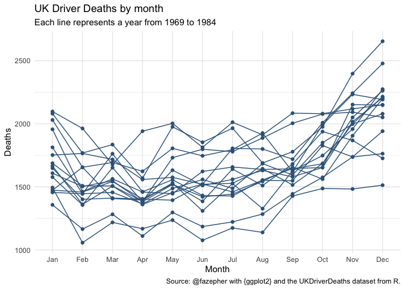
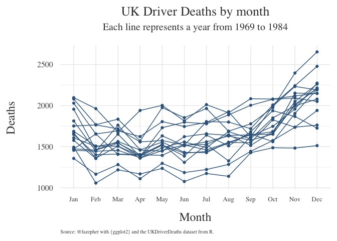
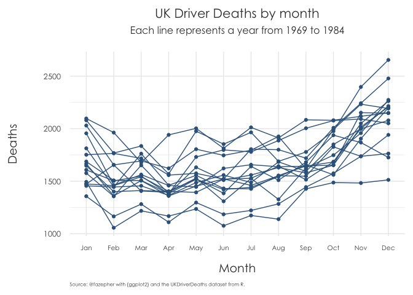
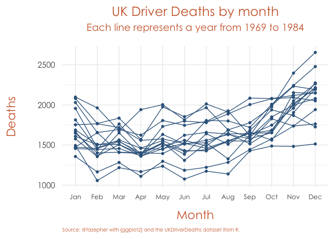

The goal of fazhthemes is to contain my personal {ggplot2} themes.
You can install the development version of {fazhthemes} from GitHub with:
# install.packages("devtools") devtools::install_github("fazepher/fazhthemes")
Let’s begin with some data already available in R.
library(fazhthemes) #> Loading required package: ggplot2 library(tidyverse) #> ── Attaching packages ─────────────────────────────────────────────────────────────── tidyverse 1.3.0 ── #> ✓ tibble 3.0.3 ✓ dplyr 1.0.0 #> ✓ tidyr 1.1.0 ✓ stringr 1.4.0 #> ✓ readr 1.3.1 ✓ forcats 0.5.0 #> ✓ purrr 0.3.4 #> Warning: package 'tibble' was built under R version 4.0.2 #> ── Conflicts ────────────────────────────────────────────────────────────────── tidyverse_conflicts() ── #> x dplyr::filter() masks stats::filter() #> x dplyr::lag() masks stats::lag() UKDriverDeaths_tibble <- UKDriverDeaths %>% matrix(nrow=16, ncol=12, byrow = TRUE, dimnames = list(1969:1984,month.abb)) %>% as.data.frame() %>% rownames_to_column("Year") %>% pivot_longer(-Year,names_to = "Month", values_to = "Deaths") %>% mutate(Month = factor(Month,levels = month.abb,ordered = TRUE)) head(UKDriverDeaths_tibble) #> # A tibble: 6 x 3 #> Year Month Deaths #> <chr> <ord> <dbl> #> 1 1969 Jan 1687 #> 2 1969 Feb 1508 #> 3 1969 Mar 1507 #> 4 1969 Apr 1385 #> 5 1969 May 1632 #> 6 1969 Jun 1511 tail(UKDriverDeaths_tibble) #> # A tibble: 6 x 3 #> Year Month Deaths #> <chr> <ord> <dbl> #> 1 1984 Jul 1222 #> 2 1984 Aug 1284 #> 3 1984 Sep 1444 #> 4 1984 Oct 1575 #> 5 1984 Nov 1737 #> 6 1984 Dec 1763
We can explore the monthly driver deaths in the UK for each year in our dataset. From the core themes, I’ve always prefered minimal, so let’s see it. It looks good.
uk_dd_plot <- ggplot(data = UKDriverDeaths_tibble, aes(x=Month,y=Deaths,group=Year)) + geom_line(color = "steelblue4") + geom_point(color = "steelblue4") + labs(title = "UK Driver Deaths by month", subtitle = "Each line represents a year from 1969 to 1984", caption = "Source: @fazepher with {ggplot2} and the UKDriverDeaths dataset from R.") uk_dd_plot + theme_minimal()
 However, I’m not a fan of several things. First, at work, we mostly use gray texts in our presentations instead of the default black in the plot. Secondly, we never liked the title and subtitles on the left. Thirdly, our corporate prefered font is more similar to the Century Gothic family. So I frequently ended up changing {ggplot2}’s defaults. Furthermore, when working on reports for clients, my coworker Lucía always noted that the axis texts and titles were too small on the actual reports. As she constantly needed to adjust them, and we knew her changes would almost surely result in better plots, it soon became an inside joke: now, let’s lucify the plot. We worked together in order to come up with some other defaults that we felt were appropriate for those needs (and our aesthetic tastes). The result were the lucified core themes. How do they look? Let’s lucify our previous plot!
uk_dd_plot + lucify_theme_minimal()
Obviously, like I said, these themes are tailored to our own specific aesthetics. You may not like to change the default family font or want to use your own prefered family (you could also have an error when trying to use Century Gothic, probably because in order to change families in plots, one has to first use the {extrafont} package). You can always change the family with another call, for example adding theme(text = element_text(family = “serif”)), but the lucify theme functions allow you to specify it directly with the text_family argument.
uk_dd_plot + lucify_theme_minimal(text_family = "serif")

Likewise, if you feel we have chosen too big text sizes you can scale back with the text_size argument.
uk_dd_plot + lucify_theme_minimal(text_size = 12)

Lastly, there is a text_color argument. This feature is still in development, in terms of its interaction with the different themes. Currently, for the lucified minimal theme it doesn´t change the axis text color, for example.
uk_dd_plot + lucify_theme_minimal(text_color = "sienna3")
